What
For my two dimensional floor height measuring project, I had designed an electronic laser target board. I used my sponsorship from PCBWay. The PCBs have arrived and in the following I’ll describe how to order PCBs with PCBWay and how my experience was.
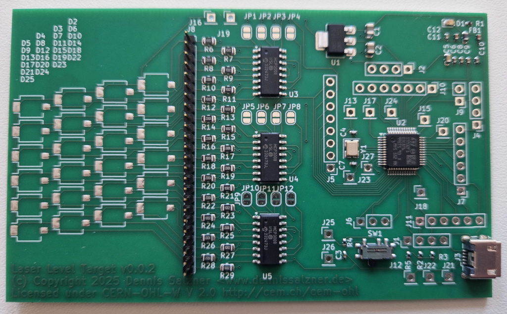
Contents
Contents
When
Timeline and Communications
On the October 15th 2025 I received an E-Mail from PCBWays Marketing Department. They asked, if I was interested in a sponsorship. I had seen that PCBWay is also sponsoring many other hobbyists and so I was excited for the opportunity.
By Janaury 30th 2026 my design passed their preliminary audit. Soon after the boards moved on to production and assembly. On 14th of March 2026 I received photos of the boards to check, if polarity, orientation and soldering was correct. By the 24th of March 2026 I was holding five manufactured and assembled PCBs in my hands.
The initial time from October 2025 to February 2026 could have been much faster. At the time I wasn’t so familiar with their processes. Next time I will be able to provide the information they need for production directly from the start.
-
if you choose to have PCBWay handle assembly, we need a BOM (“Bill of Materials”). This BOM needs exact part numbers and a vendor. Specifying only generic SMD resistors and package size won’t work. I was reluctant to specify a vendor, because I didn’t know what vendors they have access to and would have rather had they offer a generic resistor manufacturer. In the end I found someone elses BOM on GitHub [3], that I knew ordered with PCBWay, and just copied their manufactureres (“Yageo” for Resistors in this case). PCBWay can acquire parts from digikey.cn, mouser.cn, ICkey. Element14 and alibaba - possibly more.
-
my design contained a lot of pin arrays as test points. These require buying in bulk and cutting them to length. Through-Hole components are an issue as that requires manual work. As the pin arrays would have driven up the price significantly, I opted to leave them unpopulated.
-
an issue with my design was Vias underneath SMD pads. It appears PCBWay does support this, but it also leads to much higher production costs. My design was full of vias behind SMD pads as I was lacking the experience to know this could be an issue. I ended up rerouting the PCB to avoid this. Along the way I also fixed the edge placement issue with the USB connector. Then I resubmited my design.
-
the photodiodes or “ambient light sensors” as they are branded were very expensive to order from China. So I opted to leave them out, source them myself and solder them onto the boards upon arrival.
The PCBWay employees use westernized names. I was communicating with Liam from marketing, Lynne for production and later Sierra for assembly. There are likely teams behind them.
Background
Design the PCBs
KiCad is an EDA (“Electronic Design Automation”) application. It is a fantastic software. I had used it around 2026 when I was etching custom PCBs (see PCB Etching).
The process typically involved three stages:
- 1) draw the circuit - by selecting components from a component list and connecting wires.
- 2) “route” the circuit onto a PCB layout - by moving components around and drawing connections such that there are not crossings using a limited number of layers
- 3) select the exact components, manufacturers and sources - by using the BOM (“Bill of Materials”) tool
All of the information is then exported. Either we print to a transparent sheet and go through the PCB etching process (see PCB Etching) or we upload the files to a PCB fabrication company and they will manufacture the PCBs and send them back by mail.
Design Rules Checker
A very important step in designing a PCB in KiCAD is the “design rules checker” (DRC). It can be accessed via the menu in KiCad. It checks for missing connections, overlapping components, overlaps in the silkscreen print and so on.
I initially had 58 errors, but they were quickly fixed. Once the DRC shows zero warnings and errors we can be relatively sure that the PCB will work as per schematic. Of course the schematic could still be wrong, but as mentioned above: I’ve minimized this risk somewhat by using a ready-made stm32f103 schematic and using the mcp3008 analog digital converters that I know how to use from previous projects.
How
Submitting the design to PCBWay
With the design ready I was able to move onto submitting it to PCBway for production.
Manufacturing Files
KiCad has an option to export “manufacturing files”.
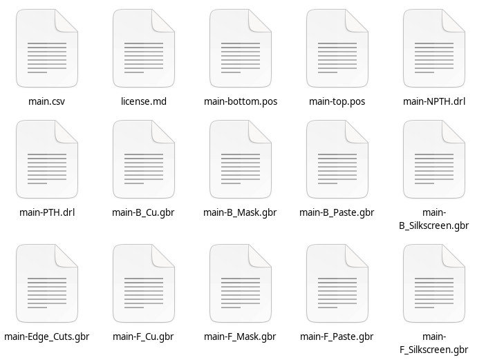
For PCBWay to be able to manufactur the board I exported:
- the Gerber-File (*.gbr) files that contain the PCB itself (copper, mask, paste, silkscreen front and back)
- the component positions (*.pos) file that contain the position of the components (front and back)
- the drill files (*.drl) that specifiy the places to drill holes into the boards for pin headers (front and back)
- and the bom file (*.csv) that give more details about the individual components such as voltage rating, tolerance, manufacturerer
To submit my design I went to the webpage of PCBWay.
Order Form and Price Calculator
At first I was overwhelmed the order form, but then found most options are self-expanatory and found I could leave most on default values. Each setting has a “question mark” symbol you can click on to get explanations.
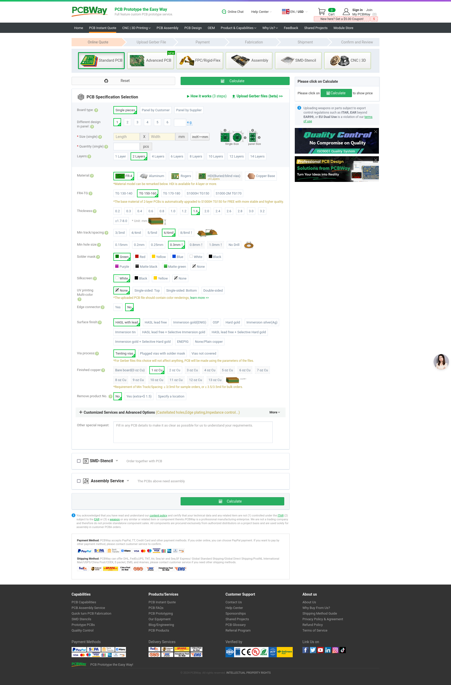
After selecting my options I got a first quote for the price. Manufacturing five PCBs costs 5 USD. The most expensive part by far is the shipping. Later I found that assembly costs about 30 USD. In the end the complete order of five pre-assembled PCBs including taxes and shipping was 172.65 USD. This was fully covered by PCBWay for my order under the sponsorship.
But even without sponsorship, considering the component prices and the time that saves it will often be well-worth it. It’s amazing how cheap PCB production has become.
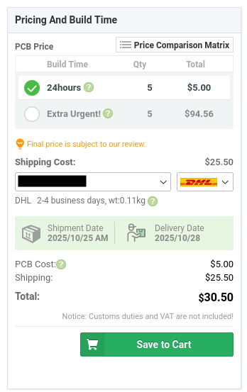
Export Regulations, Constraints and Intellectual Property
Next they warn that submitting designs that are forbidden under export regulations or are intended for weapons are not allowed as per Terms of Service. That makes sense.
I’d also be weary of submitting anything across continents where intellectual property matters. My design is open-source, so I doesn’t matter.
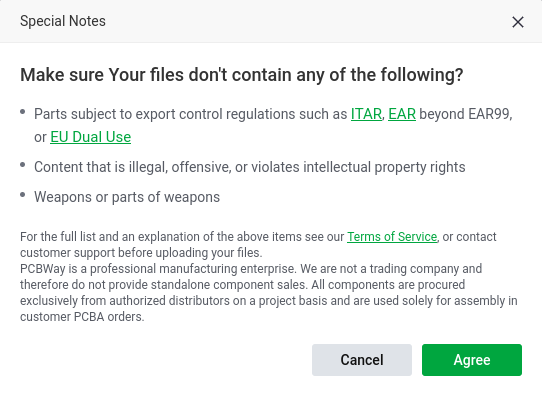
Registering
Next we register a new account. I like that this step is fast and easy and only takes place after the first price quote.
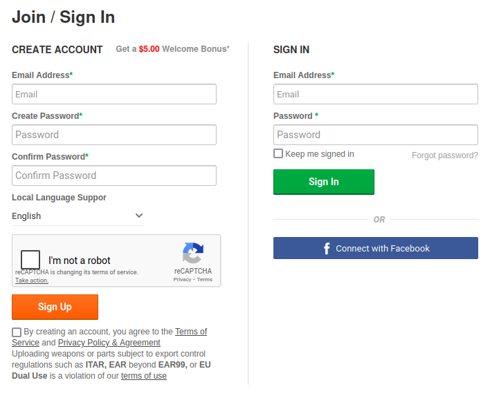
Upload Design
And then we can upload the design files as compressed archives. The process with PCBWay is to upload the files and then wait for approval. Before approval they may ask some questions.
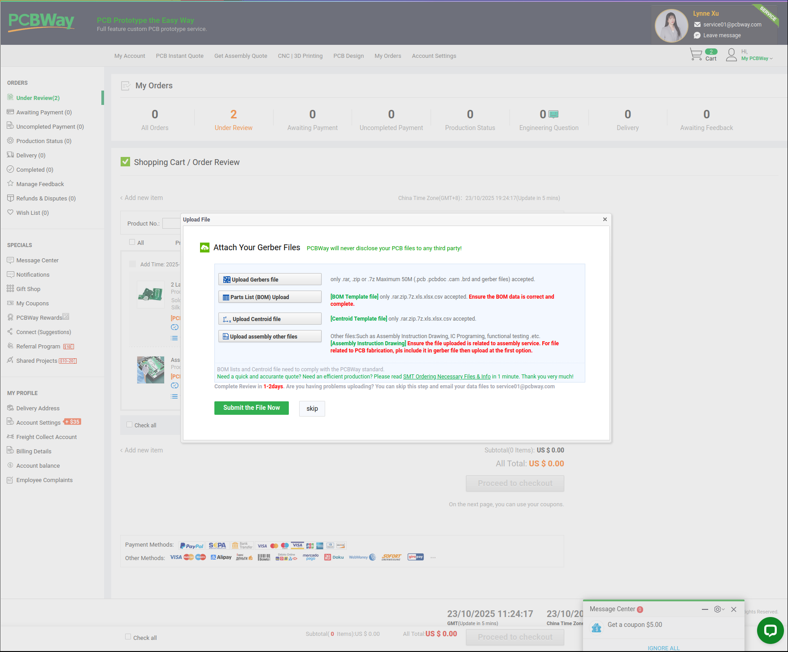
Compressed Archives
For this I made archives via a shell script
#!/bin/bash
PROJECT_DIR=<path to kicad project>
rm ${PROJECT_DIR}/manufacturing/*
cd ${PROJECT_DIR}/manufacturing/
# pcb layout
cp ${PROJECT_DIR}/main/*.gbr .
# drill files
echo "bohrdateien"
cp ${PROJECT_DIR}/main/*.drl .
# component positions
echo "platzierung"
cp ${PROJECT_DIR}/main/*.pos .
# component details, bom
cp ${PROJECT_DIR}/main/*.csv .
zip gerber-and-drill-files.zip *.gbr *.drl
zip centroid-file.zip *.pos
zip bom-file.zip *.csv
#zip additional-files.zip *.drl
Gerber and Drill files
At first I wasn’t sure where to put the drill files (*.drl) files, so I uploaded them as “additional files”. They didn’t find them and I received an E-Mail regarding this soon after. I then added the *.drl files to gerber-and-drill-files.zip and re-uploaded. It was then approved.
I presume they often have to ask for the drill files as the upload form doesn’t mention them.
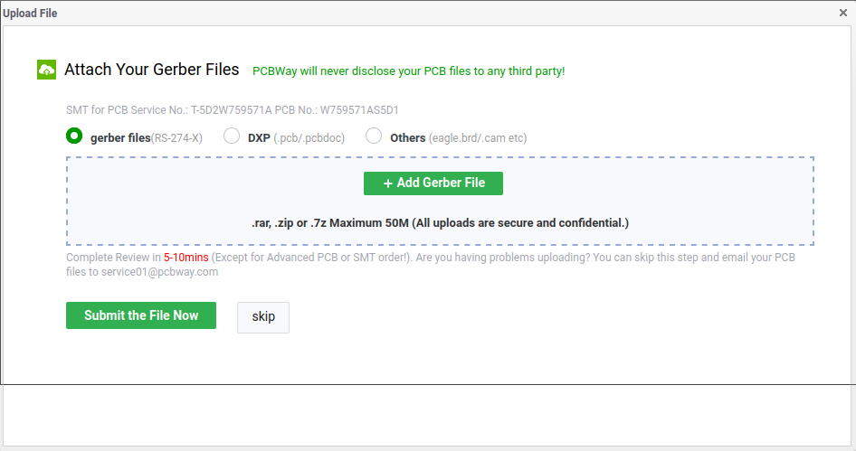
Components BOM format
For the BOM I also received very valid questions by E-Mail.
As mentioned above my original BOM, directly exported from KiCAD, was in German and missed details on the generic resistors and capacitors. To be sure PCBWay asked me to annote the BOM to contain that information and provided and example [2].
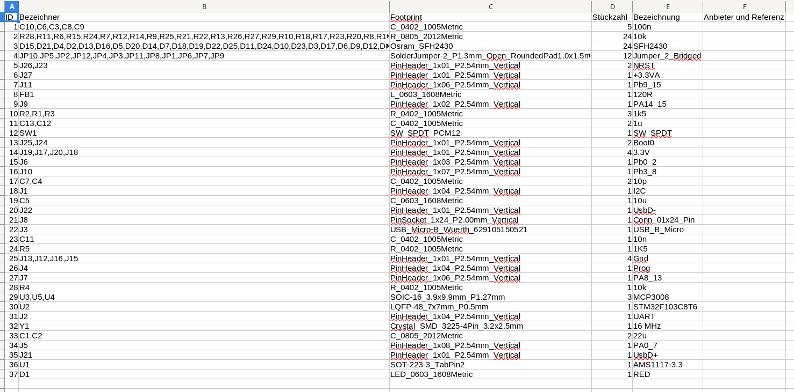
After adding the information by selecting example parts I resubmitted a new BOM by E-Mail.
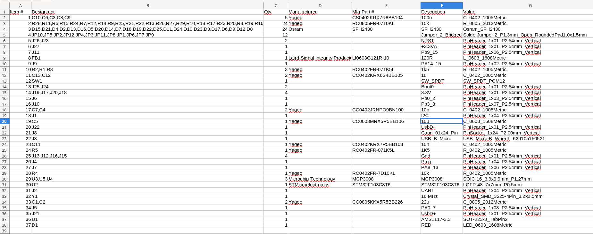
Further Process
After initially submitting the archives we can see the approval status on the web page.
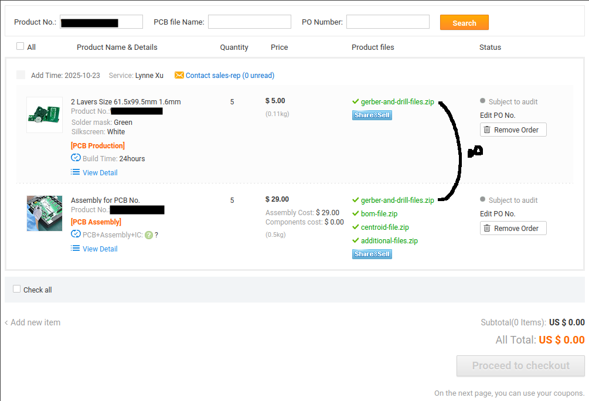
I was also asked to enter the delivery address in the options
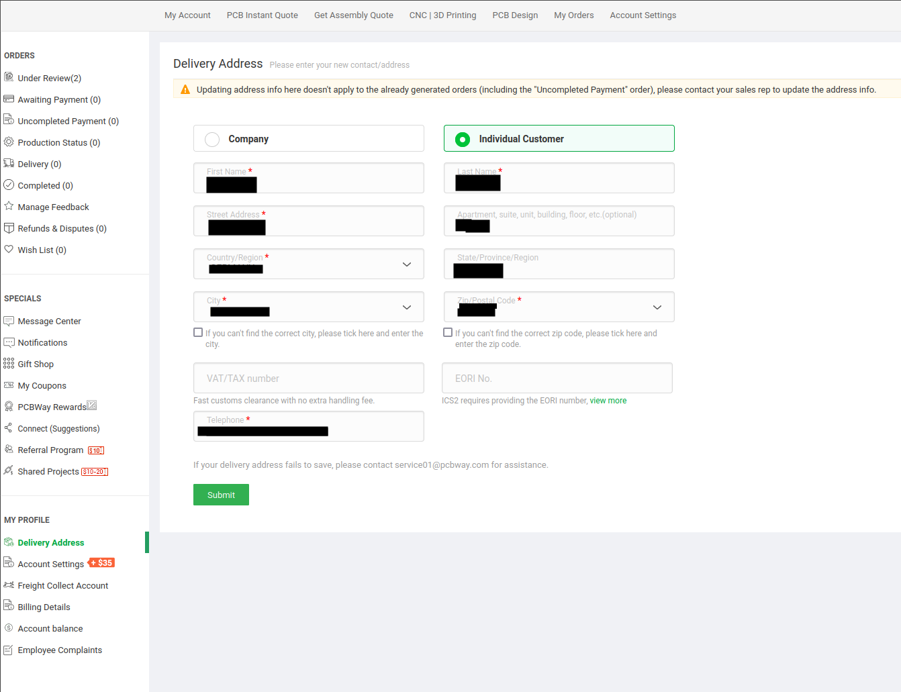
PCB production and assembly are two separate orders, so there are two rows in the table.
“Proceed to checkout” remains grayed out until the approval is completed.
The page has an interactive guide to explain where to find things.
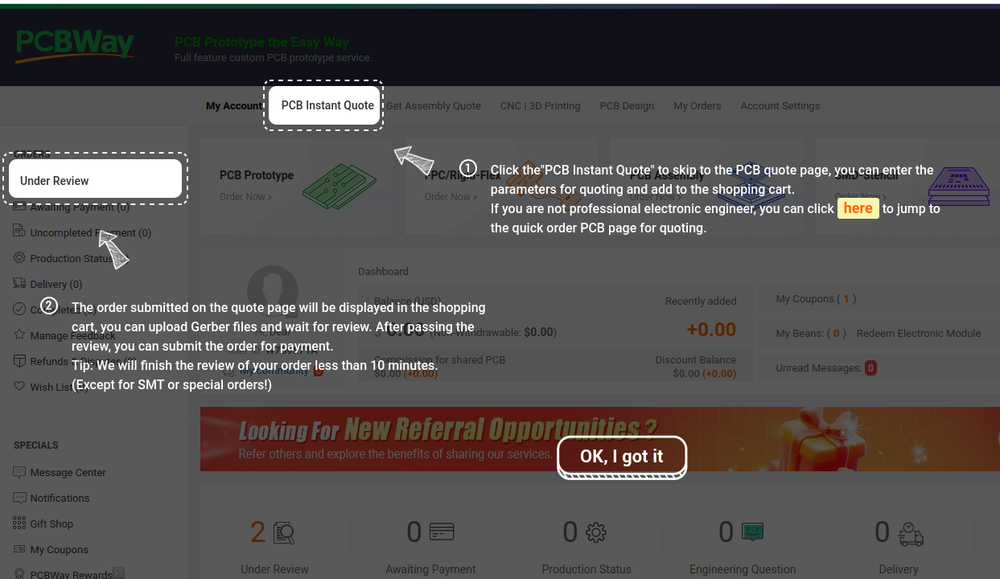
Progress
Follow-Up Communicaitons and Delivery
After initial submission of the design PCBWay will get in touch. Typically they will have questions, as was the case with my order.
After the questions were answered, the boards were manufactured, assembled and sent to me within 2 months.
They recommended selecting the delivery option Fedex-FICP(IOSS). That way value-added taxes were already covered and I didn’t have to deal with customs. The parcel was sent by FedEx, but was passed on to Hermes that then delivered the parcel to me.
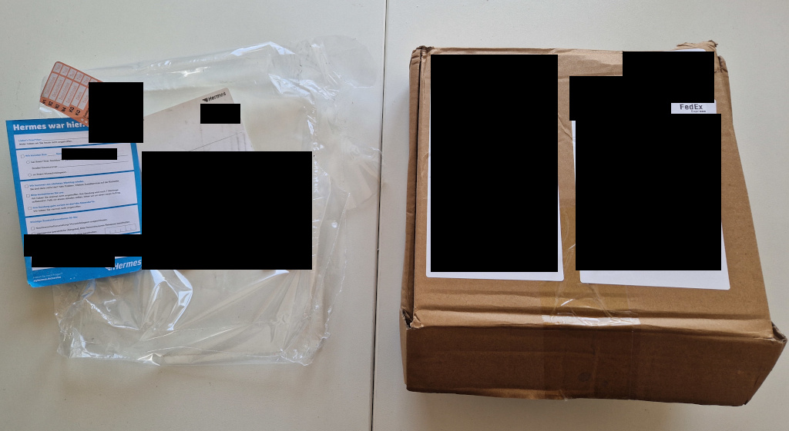
Progress
Conclusion
Overall the process of ordering a PCB with PCBWay was very pleasant. The process could have been even faster, if I had provided complete information from the start. If I go with full assembly again, I’ll pay more attention to meet the BOM criteria from the start. The sponsorship was a great way for me to follow through with PCB production and improve my project significantly. I can recommend using their service.
In the next part of the series we’ll try getting a board up and running. We’ll try flashing the stm32, sending data over serial communication, reading the mcp3008 analog-digital-converters and then adding the photodiodes. If everything works as planed we can see the analog values on a computer and calibrate the system to get accurate laser line height readings.
1] https://github.com/flamerten/Basic_STM32_Bluepill 2] https://www.pcbway.com/img/images/pcbway/Sample_BOM_PCBWay.xlsx 3] https://github.com/ExcessiveMotion/drive-hardware/blob/dev/KiCad/HV%20servo%20drive%20v1/manufacturing%20files/rev2/HV%20servo%20drive%20v1.csv